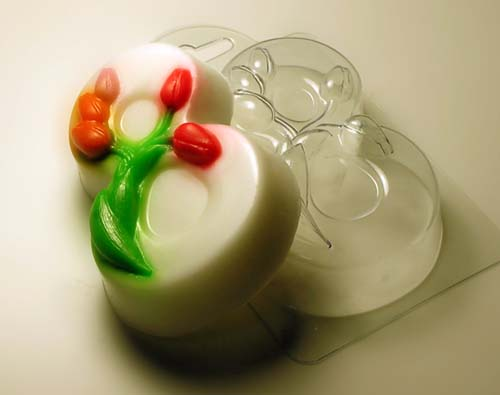

Мыло-скраб «С 8 марта»

Описание
Милые, дорогие, близкие нам женщины: любимые подруги, мамы, бабушки, сестры, коллеги по работе. У каждого человека найдется немало тех, кого хотелось бы порадовать в чудесный весенний праздник. Что подарить представительнице прекрасной половины человечества на 8 марта, кроме банальных тюльпанов и веточки мимозы? Конечно же, мыло, сделанное своими руками! Это великолепный презент, в который вложена частица души дарителя. На нашем сайте вы найдете немало оригинальных рецептов, соответствующих случаю. Мыло-скраб «8 марта» - один из них.
Состав
- Белая мыльная основа – 100 грамм
- Масло кофе – 1/3 чайной ложки
- Молотый черный кофе – 1-2 чайных ложки
- Ароматизатор пищевой Капучино – 1-2 капли
- Морская соль – 1-2 чайных ложки
- Форма «8 марта»
- Подарочная упаковка 003
Рецепт
- Степень кофейного помола определяется в зависимости от типа кожи получателя подарка. Барышням с тонкой, чувствительной кожей больше подойдет зерно мелкого помола. Всем остальным – среднего и даже крупного.
- И кофе, и соль призваны обеспечить мылу скрабирующие свойства. Но если вы знаете, что та, кому предназначается подарок, не любит грубые средства для ухода за кожей, от одного из ингредиентов можете смело отказаться. Мыло не потеряет своих полезных свойств и привлекательности.
- Для приготовления данного гигиенического средства лучше всего использовать обычную морскую соль, без красителей и ароматизаторов.